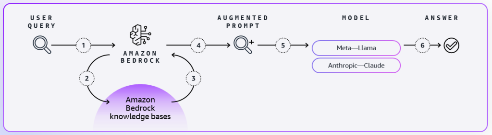

Blog 3
Tối ưu hóa chi phí khi sử dụng các mô hình nền tảng với Amazon Bedrock
by Adam Richter and Bowen Wang | on 22 APR 2024 | in Amazon Bedrock, Generative AI, Best Practices | Permalink | Share
Bài viết này được cải thiện nhờ các nhận xét từ Andrew Shamiya và Zhibin Cao.
Khi chúng ta tiếp tục chuỗi năm phần về tối ưu hóa chi phí cho các khối lượng công việc generative AI trên AWS, bài đăng thứ ba này chuyển trọng tâm sang Amazon Bedrock. Trong các bài viết trước, chúng tôi đã khám phá các nguyên tắc Cloud Financial Management principles on generative AI adoption và các chiến lược phát triển mô hình tùy chỉnh bằng Amazon EC2 and Amazon SageMaker AI. Hôm nay, chúng tôi sẽ hướng dẫn bạn các kỹ thuật tối ưu hóa chi phí cho Amazon Bedrock.
Amazon Bedrock là gì?
Amazon Bedrock là một dịch vụ được quản lý hoàn toàn, cung cấp quyền truy cập vào các foundation models (FMs) hàng đầu từ nhiều công ty AI thông qua một API thống nhất. Điều này giúp các nhà phát triển xây dựng và mở rộng các ứng dụng generative AI mà không cần quản lý hạ tầng phức tạp.
Inference, khối xây dựng mới trong các ứng dụng hiện đại
Tại AWS re:Invent 2024, Giám đốc điều hành Matt Garman đã giới thiệu một sự thay đổi về cách chúng ta nhìn nhận kiến trúc ứng dụng: đặt inference như một khối xây dựng cơ bản của các ứng dụng hiện đại, bên cạnh compute, storage và database. Khi bạn ngày càng tích hợp khả năng generative AI vào quy trình vận hành, việc quản lý và tối ưu hóa chi phí suy luận sẽ trở nên quan trọng như quản lý chi phí đám mây truyền thống.
Mô hình định giá linh hoạt cho mọi trường hợp sử dụng
Mô hình pricing linh hoạt của Amazon Bedrock bao gồm ba tùy chọn chính:
- On-Demand: Trả tiền theo mức sử dụng, phù hợp cho khối lượng công việc biến động
- Provisioned Throughput: Mang lại mức tiết kiệm 40–60% thông qua cam kết trong một hoặc sáu tháng
- Batch Processing: Cung cấp mức giá thấp hơn tới 50% so với on-demand cho các hoạt động không yêu cầu thời gian xử lý nhanh

Lựa chọn mô hình chiến lược
Việc lựa chọn mô hình trong Amazon Bedrock là một quyết định mang tính chiến lược có thể ảnh hưởng đến chi phí, hiệu quả và kết quả hiệu suất. Amazon Bedrock cung cấp quyền truy cập vào các foundation models đa dạng từ các nhà lãnh đạo trong ngành như Anthropic, Meta, Mistral AI và Amazon. Thay vì cam kết với một mô hình hoặc một nhà cung cấp duy nhất, bạn có thể tận dụng tính linh hoạt của Amazon Bedrock để chuyển đổi liền mạch giữa các mô hình.
Tận dụng Knowledge Bases
Amazon Bedrock hỗ trợ việc bao gồm các Knowledge Base cho phép bạn tạo ra các ứng dụng AI sinh tùy chỉnh, có độ chính xác cao, độ trễ thấp và an toàn bằng cách kết hợp thông tin ngữ cảnh từ các nguồn dữ liệu của riêng bạn. Knowledge Base, còn được gọi là RAG (retrieval augmented generation), có thể mang lại các phản hồi chính xác, phù hợp và cập nhật hơn.

Ba điều bạn có thể làm để giảm thiểu các chi phí:
- Chỉ bao gồm dữ liệu liên quan để tránh lập chỉ mục những dữ liệu không đóng góp
- Tránh cập nhật hoặc chỉnh sửa các tệp đã được lập chỉ mục
- Xóa dữ liệu không còn cần thiết để đơn giản hóa chỉ mục của bạn
Tùy chỉnh để nâng cao hiệu suất
Những tiến bộ gần đây trong khả năng fine-tuning đã giúp việc tối ưu hóa hiệu suất mô hình trở nên dễ dàng hơn bao giờ hết. Bây giờ bạn có thể customize và fine-tune models bằng cách sử dụng dữ liệu của riêng mình mà không cần phải viết mã.
Distillation để có hiệu suất tiết kiệm chi phí hơn
Tính năng Model Distillation của Amazon Bedrock đại diện cho một cơ hội để cân bằng giữa hiệu suất và hiệu quả. Thông qua một quá trình chuyển giao tri thức tinh vi từ các mô hình “giáo viên” lớn sang các mô hình “học sinh” nhỏ hơn, công nghệ này cho phép bạn đạt được sự tối ưu hóa mà không ảnh hưởng đáng kể đến độ chính xác. Quy trình này tạo ra các mô hình đã được chưng cất có thể hoạt động nhanh hơn tới 500% và tiết kiệm chi phí lên đến 75%.
Prompt Caching để giảm chi phí và độ trễ
Khả năng prompt caching của Amazon Bedrock mang lại lợi ích vượt trội về chi phí và hiệu năng. Bằng cách lưu vào bộ nhớ đệm các prompt được sử dụng thường xuyên, tính năng này loại bỏ nhu cầu xử lý lại các yêu cầu giống hệt nhau. Kết quả là giảm tới 90% chi phí và giảm 85% độ trễ cho các mô hình được hỗ trợ.
Automated Reasoning để Cải Thiện Độ Chính Xác
Thông qua việc tích hợp Automated Reasoning, Amazon Bedrock mang đến cơ hội để nâng cao độ chính xác của AI tạo sinh và tối ưu hóa chi phí. Automated Reasoning sử dụng các phương pháp toán học để đảm bảo tính chính xác trong những lĩnh vực quan trọng như nhân sự, tài chính và tuân thủ.
Kết Luận
Bằng cách triển khai các chiến lược tối ưu hóa được đề cập ở trên, bạn có thể giảm đáng kể chi phí trong khi vẫn duy trì hoặc cải thiện hiệu suất. Điều quan trọng là liên tục đánh giá và điều chỉnh cách tiếp cận của bạn khi các tính năng và khả năng mới được phát hành. Với tính linh hoạt và bộ tính năng toàn diện, Amazon Bedrock là nền tảng lý tưởng để tối ưu hóa việc triển khai generative AI của bạn.
|
|
Adam Richter là Kiến trúc sư Giải pháp Tối ưu hóa Cấp cao tại AWS, nơi ông tập trung vào tối ưu hóa chi phí AI và các phương pháp hay nhất về FinOps. Ông đã góp phần định hình các tính năng hướng đến khách hàng và thường xuyên chia sẻ chuyên môn của mình tại các sự kiện ngành. |
| Bowen Wang là Quản lý Tiếp thị Sản phẩm Cấp cao cho các dịch vụ Thanh toán và Quản lý Chi phí AWS. Cô tập trung vào việc giúp các nhà lãnh đạo tài chính hiểu rõ hơn về giá trị của điện toán đám mây và các cách tối ưu hóa quản lý tài chính trên nền tảng đám mây. |